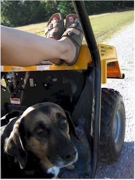
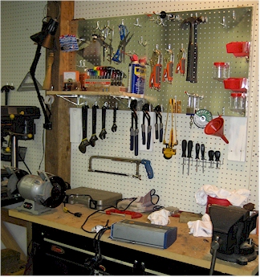
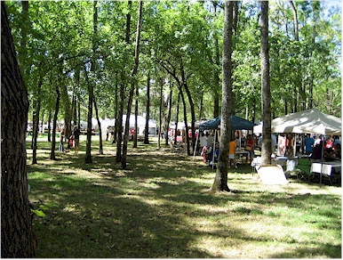
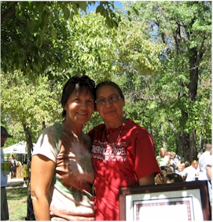
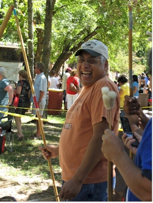
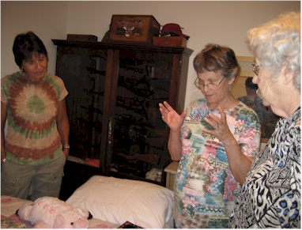
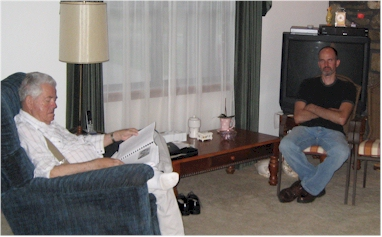

September 3 - 5, 2010
| We made a very quick trip to Westville over
Labor Day weekend. We hung out with Mom & Dad, attended the
Cherokee Holiday (me & Mom), and Eric did some climbing at Lake
Lincoln. Then we loaded up Gran and all went over for a nice dinner
with Uncle Shorty and Aunt Bernice. My cousin Gene was nice enough
to come over as well so it felt like a family reunion. |
|
 |
 |
| We celebrated the beautiful weather by taking Long Dog for a ride in the trail wagon. |
Isn't this a thing of beauty? My Dad's sense of organization is an inspiration to me. |
 |
 |
| It is lovely out at the Cherokee Heritage Center in Tahlequah. We were there for the Cherokee Holiday craft fair. |
Mom's friend was awarded the "Cherokee Living Treasure" (Master Craftsman) honor that day. She makes traditional baskets. |
 |
 |
| Another of Mom's friends - he was in the blowgun contest. |
After dinner with Shorty and Bernice, we visited Bernice's quilt room for a tour of her beautiful handiwork. |
 |
|
| Shorty reminisces though a book of old family photos while Eric (the socializer) behaves himself. |
I caught Gran with her eyes closed in this picture with Gene. I hadn't seen Gene in about 20 years so his visit was a nice treat. |